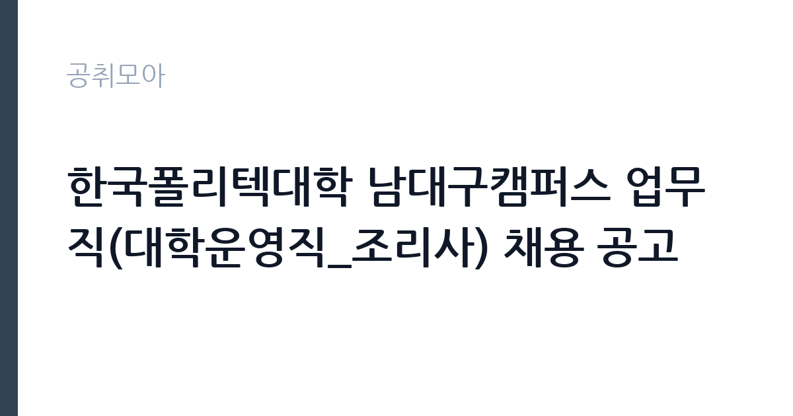

[공공기관] 한국폴리텍대학 남대구캠퍼스 업무직(대학운영직_조리사) 채용 공고
학교법인한국폴리텍 · 대구 · 마감 2026-10-27 (D-8) · 출처 잡알리오

한눈에 보는 모집 조건
| 기관 | 학교법인한국폴리텍 |
|---|---|
| 공고명 | 한국폴리텍대학 남대구캠퍼스 업무직(대학운영직_조리사) 채용 공고 |
| 고용형태 | 정규직 |
| 근무지 | 대구 |
| 게시일 | 2026-10-20 |
| 마감일 | 2026-10-27 (D-8) |
지원자격, 이렇게 읽으세요
- 공공기관 채용공시
- 세부 조건은 원문 공고문 확인
응시자격은 여섯 줄입니다. 연령 제한은 없지만 정년 만 60세가 적용됩니다. 학력과 성별 제한도 없습니다. 식품위생법에 따른 조리사 면허증 소지자로서 응시자격을 정지당하지 않은 사람이어야 하고, 임용예정일 기준 유효기간 내 건강진단결과서, 즉 보건증을 가지고 있어야 합니다. 남자는 병역필 또는 면제자여야 하며, 학교법인 한국폴리텍 인사규정 제19조 결격사유에 해당하지 않아야 합니다. 여기서 실제로 탈락이 갈리는 지점은 보건증입니다. 면허증만 있고 보건증이 만료된 상태로 접수하면 서류 단계에서 걸립니다. 보건증은 발급에 며칠이 걸리므로 마감 전에 병원 검사를 먼저 받으십시오. 같은 업무 근무 경력자는 우대하고, 최종합격 후 즉시 근무가 가능해야 합니다.
이 공고의 포인트
이 공고의 가장 큰 매력은 고용 형태입니다. 무기계약직은 계약 기간이 정해지지 않은 직위로, 사실상 정규직과 같은 안정성을 가집니다. 조리 업무를 정규직으로 시작할 수 있는 자리는 흔하지 않습니다. 두 번째는 근무 조건입니다. 유사 캠퍼스 공고를 보면 학기 중과 방학 중 근무 시간이 조정되고, 주 5일 근무에 평균 근무시간 40시간이 적용됩니다. 세 번째는 처우입니다. 폴리텍 무기계약직은 사학연금법 적용 대상으로 안내되는 사례가 있어, 국민연금이 아닌 직역연금으로 가입되는 점이 일반 계약직과 다릅니다.
전형은 어떻게 진행되나
전형은 서류심사와 면접심사로 진행됩니다. 서류심사는 응시자격 적격 여부와 지정서류 준수 여부를 확인하고, 자격 미달자와 응시원서를 성실히 기재하지 않은 지원자를 제외합니다. 면접심사는 서류전형 합격자를 대상으로 직무 수행에 필요한 능력과 적격성을 검증합니다. 합격자는 개별 통보로 안내받습니다. 채용 과정에는 법정 가산점이 적용됩니다. 취업지원대상자는 각 전형에서 동점자 우대를 받고, 장애인은 면접전형 만점의 5퍼센트 또는 10퍼센트, 저소득층·다문화가족 자녀·북한이탈주민·자립준비청년은 3퍼센트의 가산점이 붙습니다. 해당된다면 증빙서류를 빠짐없이 준비하십시오.
원문에서 확인한 전형 방식
○ (연령) 제한 없음 (단, 정년 만 60세 적용) ○ (학력/성별) 제한 없음 ○ 「식품위생법」에 따른 조리사 면허증 소지자로서 응시자격을 정지당하지 아니한 자 ○ 임용예정일 기준 유효기간 내 건강진단결과서(보건증) 소지자 (채용예정 직무와 동일한 업무에서 근무경력이 있는 자 우대) ○ 남자의 경우 병역필 또는 면제자 ○ 학교법인 한국폴리텍 인사규정 제19조(결격사유)에 해당되지 않는 자 ○ 최종합격자 발표 후 즉시 근무 가능한 자
이런 분께 추천해요
- 조리사 면허증과 유효한 보건증을 가진 분 — 두 가지가 서류 통과의 최소 조건입니다
- 대구 남구 일대 출퇴근이 가능한 분 — 남대구캠퍼스 근무입니다
- 계약직이 아닌 무기계약으로 조리 업무를 시작하고 싶은 분
지원 전 체크리스트
- 조리사 면허증과 보건증 유효기간을 모두 확인했는가 — 보건증은 발급에 며칠 걸립니다
- 남자는 병역필 또는 면제 요건을 충족하는가
- 취업지원대상자·장애인 등 가산점 대상이라면 증빙서류를 준비했는가
- 마감일 2026-10-27 이전에 접수를 마쳤는가
모집 일정과 제출 타이밍
마감일은 2026-10-27입니다. 공고 게시일이 10월 20일이므로 실제 준비 기간은 일주일 남짓입니다. 순서를 정하십시오. 첫날 공고문과 제출서류 목록을 확인하고, 둘째 날 보건증 검사를 받으십시오. 보건증은 보통 검사 후 며칠 뒤 발급되므로 이틀 이상 여유를 둬야 합니다. 남은 기간에 응시원서와 자기소개서를 작성하고, 마감 이틀 전에는 접수처에 서류가 도착하도록 하십시오. 방문 접수와 우편 접수 중 어느 방식인지 원문에서 확인하시고, 우편이라면 등기 도착 확인증을 보관하십시오.
직무 이해하기: 공공기관
한국폴리텍대학은 고용노동부 산하의 직업능력개발 기관으로, 전국 캠퍼스에서 기술교육을 운영합니다. 남대구캠퍼스의 대학운영직 조리사는 구내식당에서 학생과 교직원 식사를 만드는 일을 맡습니다. 구체적으로는 식단에 따른 음식 조리와 배식, 식당 시설과 비품 관리, 조리실 위생 관리가 핵심입니다. 여기에 캠퍼스 운영을 돕는 시설 관리 업무가 일부 붙습니다. 유사 캠퍼스 공고를 보면 조경과 예초 작업 같은 시설 운영 보조가 업무에 포함된다고 안내되어 있습니다. 학기와 방학에 근무 시간이 달라지고, 방학 중에는 단체 급식 인원이 줄어 업무 강도가 낮아집니다. 조리실 기구를 전기식으로 바꾸고 세척기를 개선한 캠퍼스 사례도 있어, 근무 환경은 과거보다 나아진 편입니다.
자기소개서 작성 팁
이 공고의 자기소개서는 화려할 필요가 없습니다. 평가자가 확인하려는 것은 위생 관리 습관, 대량 조리 경험, 그리고 장기 근무 의사입니다. 첫 문단에 보유 면허와 실무 경력을 숫자로 적으십시오. 하루 몇 인분 규모의 급식을 담당했는지, 몇 년간 조리 업무를 했는지가 핵심입니다. 본론에서는 위생 관리 사례를 하나 쓰십시오. 예를 들어 식중독 예방을 위해 온도 기록과 원산지 표시를 어떻게 관리했는지 구체적으로 적으면 신뢰가 생깁니다. 마무리에는 무기계약직으로 오래 근무하며 캠퍼스 급식의 안정성을 책임지겠다는 의사를 밝히십시오. 단시간 근무 후 이직이 반복된 이력이 있다면, 그 사유를 짧게 설명하는 편이 오해를 줄입니다.
면접 준비 포인트
면접은 직무 실무와 태도 중심으로 진행됩니다. 위생 관리 기준을 어디까지 알고 있는지, 대량 조리에서 맛을 일정하게 유지하는 방법이 무엇인지, 식중독 의심 상황이 생겼을 때 어떻게 조치할지가 단골 질문입니다. 답할 때는 절차를 순서대로 말하십시오. 보고, 격리, 검체 보관, 재발 방지 순으로 정리하면 됩니다. 조리직 면접에서는 복장과 손 위생도 평가 대상입니다. 단정한 복장과 짧게 정리한 손톱이 실무 태도를 보여줍니다. 마지막으로 방학 중 근무 시간 조정이나 조기 출근 같은 조건을 받아들일 수 있는지 확인하는 질문이 나올 수 있으니 미리 생각해 두십시오.
급여·근무조건 읽는 법
보수는 원문 공고문의 무기계약직원 보수표에서 확인해야 합니다. 다만 같은 학교법인 한국폴리텍의 다른 캠퍼스 공고를 보면 조리사 보수가 구체적으로 공개되어 있습니다. 바이오캠퍼스는 월급 2,327,460원 이상, 남인천캠퍼스는 연봉 3,000만원, 충남캠퍼스는 연봉 3,100만원으로 안내된 사례가 있습니다. 캠퍼스와 경력에 따라 차이가 있으므로 이번 남대구캠퍼스도 원문 보수표를 기준으로 보셔야 합니다. 기본급 외에 시간외 수당과 퇴직금은 보수표에 따라 별도 지급되고, 자녀수당과 출산축하금 같은 복리후생이 붙습니다. 무기계약직에는 사학연금법이 확대 적용되어 건강보험과 사학연금을 납부하는 구조로 안내된 사례가 있습니다. 실수령액은 기본급에서 기여금과 세금을 뺀 값이므로, 월급 표기 금액과 차이가 납니다.
자주 묻는 질문
- 무기계약직은 정규직인가요?
기간의 정함이 없는 근로계약을 맺는 직위입니다. 계약 기간이 정해지지 않아 정년까지 근무가 가능하다는 점에서 사실상 정규직과 같은 안정성을 가집니다. - 보건증이 없으면 지원할 수 없나요?
임용예정일 기준 유효한 건강진단결과서가 있어야 합니다. 접수 시점에 없더라도 마감 전에 검사를 받아 제출할 수 있으니, 늦어도 마감 사흘 전에는 병원을 방문하십시오. - 급여는 얼마인가요?
원문의 무기계약직원 보수표를 기준으로 합니다. 같은 법인 다른 캠퍼스에서는 월급 232만원 이상, 또는 연봉 3,000만~3,100만원으로 공개된 사례가 있습니다.
함께 보면 좋은 공고
[공공기관] 2026년 하반기 중소벤처기업진흥공단 체험형 청년인턴(일반) 채용 공고 — 마감 2026-11-03[공공기관] 2026년 제3차 동남권원자력의학원 직원채용 공고 — 마감 2026-11-02[공공기관] 2026년 한국잡월드 정규직 신입(5급) 직원 채용 공고 — 마감 2026-11-04출처: 잡알리오 공개정보를 바탕으로 공취모아가 정리한 안내글입니다. 모집 조건·일정은 변경될 수 있으니 지원 전 반드시 원문 공고문을 확인하세요. 본 글은 정보 제공용이며 합격을 보장하지 않습니다.